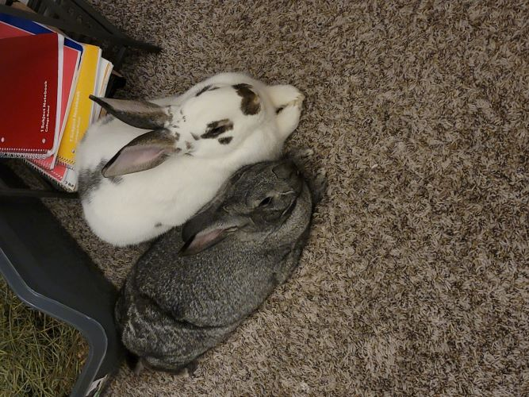
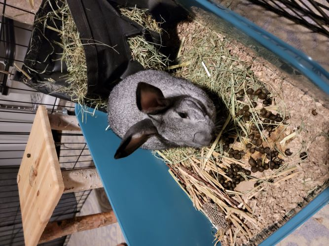
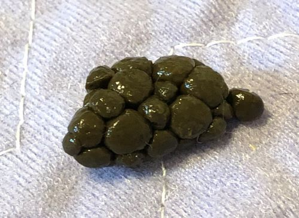
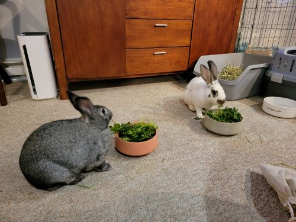
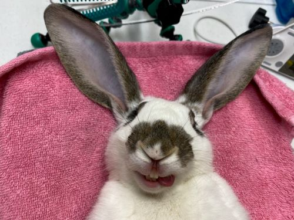
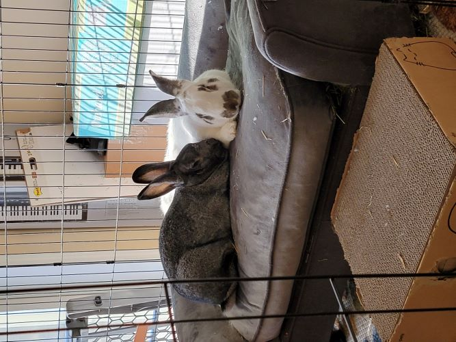

I love rabbits! I have two named Chester (male Checkered Giant/English Spot mix) and Spunky (Female American Chinchilla). They are wonderful, funny, and sweet. Also, not small
(Chester comes in at about 11lbs and Spunky about 8lbs). Contrary to what some may think, they are also not an inexpensive animal to keep, due to the fact that many pet insurance companies
do not cover rabbits since they are still considered an "exotic" animal. They must be seen by a vet who specializes in rabbits in order to receive the best care.
Having a pet rabbit, although some times challenging, can be super rewarding. Here are some things I would like you to know about rabbits, especially if you are looking to getting one (or two) of your own.
Rabbits are lagomorphs. They are their own special category of mammal. That means they are not like cats, nor dogs, nor horses.
They do share some similarities with rodents, like the fact that they have two front top and bottom teeth that will continually grow, but the similarities end there.
Spunky
They are crepuscular, meaning they are active at dawn and sunset. Most rabbits will forage a bit in the morning, graze a little during the day, but mostly nap.
Then, in the evening before the sun sets, they become active again. Breakfast hours for Chester and Spunky are from 7-9am, and dinner is anywhere from 7-9pm. They get a mix of greens, sometimes with cilantro or parsley.
Spunky and Chester napping. Notice the cord protectors.
They can be litterbox trained, and have very low odor. Both of my rabbits use an x-large litter box. I wouldn’t use wood-shavings, and definitely not cat litter, which can make your rabbit very sick.
I use a mix of CareFresh paper bedding with woodstove pine pellets underneath. I also have a hay bag setup so they can eat hay while they do their business. Which leads me to my next thing about rabbits…
They like to eat their own poop! It’s okay- many animals do this. Rabbits are like elephants and other vegetarian mammals- not all of the nutrients from the hay and greens they consume
is adequately absorbed the first go around, and so they eat a special poop called “cecotropes,” which are produced from fermented poop in the rabbit’s cecum, a part of their intestinal tract.
These are usually produced at night or early morning. I call them butt-snacks (which grosses out my family).
It’s true, rabbits love carrots (but you shouldn’t give them too much). That is because a rabbit’s diet mostly consists of hay, a handful of fresh greens morning and night, and the
occasional small rabbit snack. Giving a rabbit a whole carrot is equivalent to giving a child a whole chocolate cake to eat: it is way too much sugar, and can lead to obesity.
Small pieces of vegetables are fine, or a blueberry, a piece of banana, or a piece of apple. About half an inch.
Rabbits should be neutered and spayed. I adopted both of mine from Oak Park Animal Care League, and they are micro-chipped and de-sexed. Especially for females, it helps prevent reproductive
cancers and can help prolong your rabbit’s life. Plus, reduces the risk of unwanted litters if you have a male/female pair. The gestation period for rabbit pregnancies is 30 days, and a female
rabbit can become pregnant the day she gives birth, so you do the math….
Chester post operation and heavily medicated
Rabbits love to chew. They will chew your books, blankets, couch, and sometimes carpet. They are a great way to learn patience, to keep your house tidy, and to break your attachment to material things.
In a sense, they could arguably be considered enlightening. Because they like to chew, they should have supervised play time. I let my rabbits roam free when I am home, but all other times they are safely
tucked in their pen. All cords must have cord protectors, or be inaccessible to your rabbits. Spunky’s favorite pastime is chewing phone chargers.
I recommend an exercise pen with plenty of toys, a place for them to sleep/ hide, and space for a litterbox. The more space you can give them, the better. Mine have what I call a rabbit compound
(two exercise pens) that surround an area with a small couch, litterbox, play table, and house with a loft called the Bun Mahal. (I understand this may be a bit excessive...but they are so worth it!)
Want to adopt, foster, volunteer? Oak Park Animal Care League
A good resource for first time rabbit owners: My House Rabbit
Where I get my hay and litter from: Small Pet Select Hay and Litter
Treats for Rabbits: Oxbow Rabbit Treats